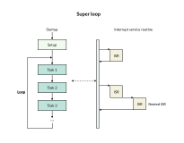
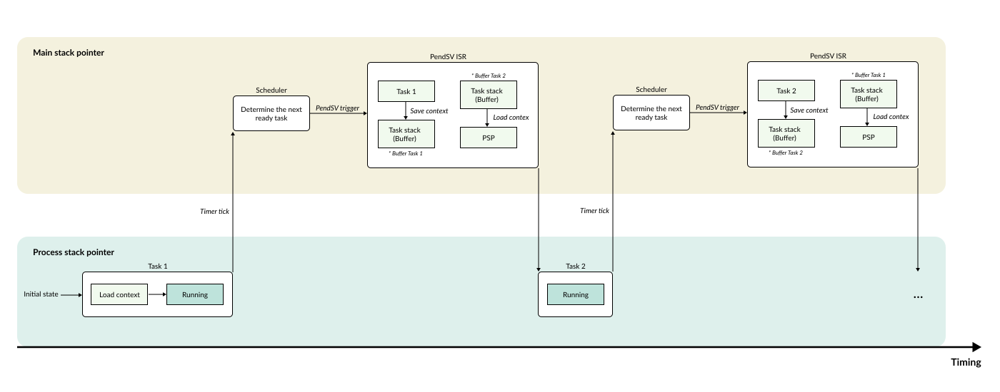
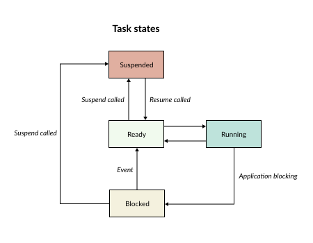
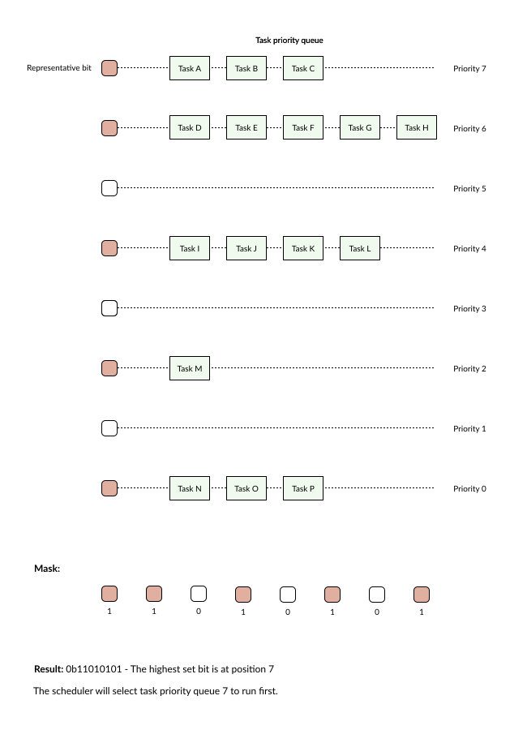
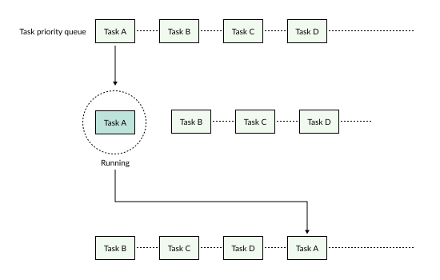

Task
Super Loop Model
First, let’s take a look at how a typical embedded software program works.
After the microcontroller is powered on or reset, the program goes through the following steps:
Memory initialization (Startup code)
Hardware initialization: Clock, GPIO, UART, SPI, etc.
Application initialization
Entering an infinite loop (Super loop)
/* startup code */
...
void main() {
/* system init */
system_init();
/* periperal init */
uart_init();
i2c_init();
gpio_init();
while (1) {
/* reading sensor */
...
/* button pressed */
...
}
}
This infinite loop is commonly referred to as a super loop. The entire user application will be executed sequentially inside this loop.
For small applications, this method works very efficiently:
Easy to understand
Easy to implement
No additional RAM overhead
No complex task management mechanism required
{kind=link}

However, as the system grows larger, several issues begin to surface. Subsequent tasks must wait entirely for the preceding task to finish executing. This leads to:
High response latency
Difficulty in guaranteeing real-time performance
Delayed processing of critical tasks
Source code becoming increasingly difficult to maintain
Particularly for tasks that require strict delay constraints, processing becomes even slower. Instead of placing the entire program into a single loop, an RTOS divides the application into multiple independent execution blocks called Tasks. For example:
Sensor reading task
UART communication task
Display control task
Data processing task
Each task possesses its own:
Execution function
Stack memory
Priority level
void task_sensor_handler() {
while (1) {
read_sensor();
}
}
void task_console_handler() {
while (1) {
serial_polling_console();
}
}
void task_display_handler() {
while (1) {
lcd.update();
}
}
Context Switching Concept
To transition the CPU from one task to another, an RTOS utilizes a mechanism called Context Switching. Since only one task can run at any given moment, this operation is commonly referred to as multitasking virtualization.
The context represents the entire state of the CPU at the exact moment the task is executing.
{kind=link}

When the RTOS decides to switch from the currently running task to another task, the process unfolds as follows:
Step 1: Save the entire execution state of the currently running task into its own private memory (typically that task’s stack).
Step 2: Reloads the previously saved state of the next task, allowing the CPU to resume execution from the exact point where it left off.
Step 3: The CPU continues executing the new task as if it had never been interrupted.
Task priority
Task states
{kind=link}

Above are the 4 states of a task:
Running: The task is currently executing.
Ready: The task is waiting and prepared to be scheduled for execution.
Blocked: The task is temporarily suspended by application operations (e.g., Task delay, waiting for a mailbox, waiting for a mutex).
Suspended: The task is explicitly requested to be paused and is excluded from context switching operations.
Priority-based
During the context switching process, the Scheduler decides which task will run next. Similar to other RTOS frameworks, RK utilizes the following two mechanisms:
Priority-based: Context switching based on the priority level among tasks.
Round-Robin: Rotational context switching.
RK utilizes a bitmask mechanism to rapidly determine the highest priority task that is eligible to run next.
{kind=link}

As illustrated above, each priority level is associated with a corresponding task queue for that specific priority. This queue is structured using a singly linked list.
The scheduling operation proceeds as follows:
Step 1: The Scheduler identifies the highest priority task by checking which priority bit is set (enabled).
Step 2: It pops a task from this specific queue (to allow it to run).
Step 3: It moves this task to the end of the queue for that same priority level.
Round-robin
{kind=link}

Within the same priority level of a task list, tasks will rotate their execution based on the time slices of the RTOS tick (Heartbeat tick).